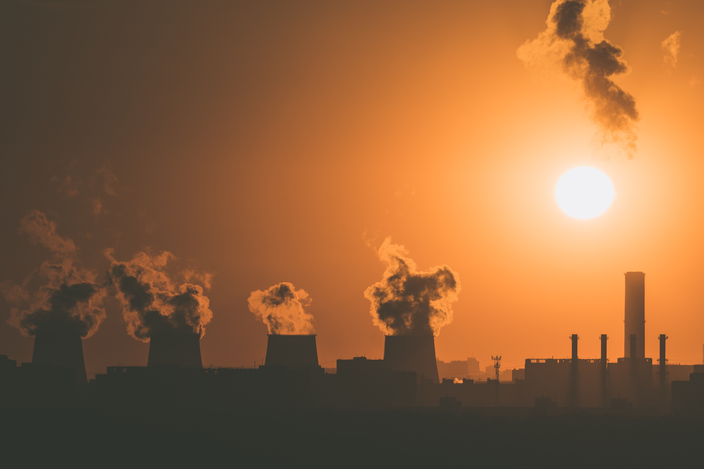
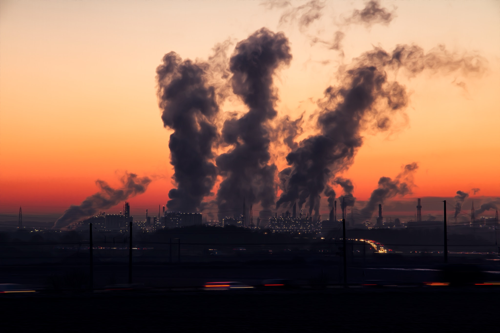

How much carbon do you emit with your current lifestyle?
Please read the following before you use our calculator!
Please answer the questions in the text boxes bewlow in the format "0.00"
Please remember that the total estimated carbon emissions output is only an estimate based on the average amount of carbon emitted from the goods and services listed below.
If you do not know the answer to one of the questions, leave it at its default value.
The more accurate information you enter, the more accurate the final value will be.
Please also remember to be consistant with the input selection you chose for the time period.
if you drove your car 3 hours every day and chose "days," you would input "3," whereas if you chose "weeks," you would input "21."
1 / 3

Worldwide, we emit around 36.44 billion tons of CO2 yearly.
2 / 3

The average US household emits around 7.5 tons of CO2 yearly.
3 / 3

Please use the number you got through the calculator to compare your emissions, if it is more, check out "Additional Resources" for some easy ways to limit your emissions
❮
❯
All of our options were chosen because they are large contributors to carbon emissions in the enviroment for households.
The following is an explaination of why each option is listed, and what you can do to lower your carbon footprint.
- Food
- First, livestock need space, so land is often deforested in order to accommodate, therefore both releasing carbon and removing trees which absorb it. Secondly, both fossil fuels and electricity are often necessary to operate farms as well as to process foods or create secondary food items like cheese. Thirdly, production of food requires water and additional food, creating a cycle of energy requirement. Finally, it requires a lot of energy to transport foods to final destinations as well as to refrigerate and then cook them. This is why it is recommended to limit consumption of animal products such as meat and dairy. For more information, visit The New York Times or BBC.
- Transportation
- - The main reason for which transportation is an enormous contributor to carbon emissions is because it requires the burning of fossil fuels. Iin 2019, about 29% of the United States’ carbon emissions were from the transportation sector. For more information, visit theEnvironmental Protection Agency.
- Appliances/Electric Devices
- Appliances/electric devices: These contribute to carbon emissions because they need electricity in order to function. However, as of yet, the production of electricity in the United States relies mostly on fossil fuels and other non-renewable sources. In 2019, 1.92 billion metric tons were emitted from the electric sector in the US. For more information, visit the U.S. Energy Information Administration.
- Internet
- The internet is a large contributor to global carbon emissions because of its high energy requirements for wireless networks, servers, devices, and data processing. If virtual work caused by COVID-19 continued through all of 2021, there would need to be a forest twice as big as Portugal to be planted in order to counter the amount of greenhouse gases which would be emitted, based on current trends. For more information, visit Yale News or BBC.
Here are some good resources to help you cut your carbon emissions!
Here are some resources that you can use to try to lower your carbon emssions!
A carbon footprint is the total amount of greenhouse gas that you directly or indirectly emitt. See "Home" to calculate your total emissions. Please note that the amount recieved through the calculator is an underestimate.
In the US, the largest household emissions come from transportation, emergy use, and personal consumption.
Ironically, switching to an electric car is not as helpful as it may seem, as most power stations still operate on coal or natural gasses, which produce CO2.
Changes must be made on a day-to-day lifestyle change, including changing diets and forms of transportation. There will never be one major change that fixes our climate emissions, but we can help on a personal level.
- Drive Less
According to the New York Times, Transportation emissions are increasing exponentially, directly corrilating to an increase in US car purchasing. You can reduce your carbon footprint by decreasing usage of gas and breaks, keeping your car healthy, reducing in-car gas usage like air conditioning, and reducing inner city driving. Though, the best way to reduce carbon emissions through transportation is to bike or walk- though if you cannot, public transport like busses and trains will always do the trick. Public transportation, while efficient, is bad at traveling from suburb to suburb- which is why carpooling may sometimes be the best option.
- Chaning your diet
Chaning your diet can improve both your carbon footprint and health. A great example is reducing your intake of red meat is both good for your heart health and reducing your carbon footprint. when factories feed cattle grain and unnatural nutrients, they release a large amount of methane and greenhouse gasses. Instead of eating typical red meat, increasing your consumption of chicken, wild fish, and plants will reduce your carbon footprint greatly. These foods are more calorically efficient.
- Reducing your waste
the United States wasted 267.8 million tons of garbage in 2017- which is an astounding increase compared to the previous year. Garbage like this horribly impacts the enviroment, it hurts ecosystems which depend on their habitats for food and shelter. This unnatural stimuli can heavily impact the enviroment as a whole.
Small changes like these are extremely important.